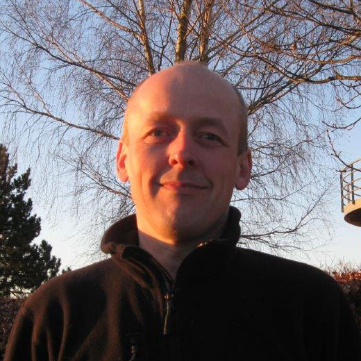
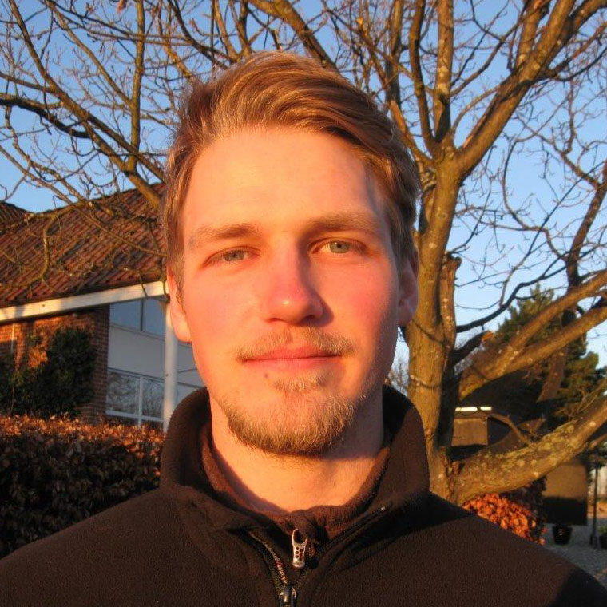
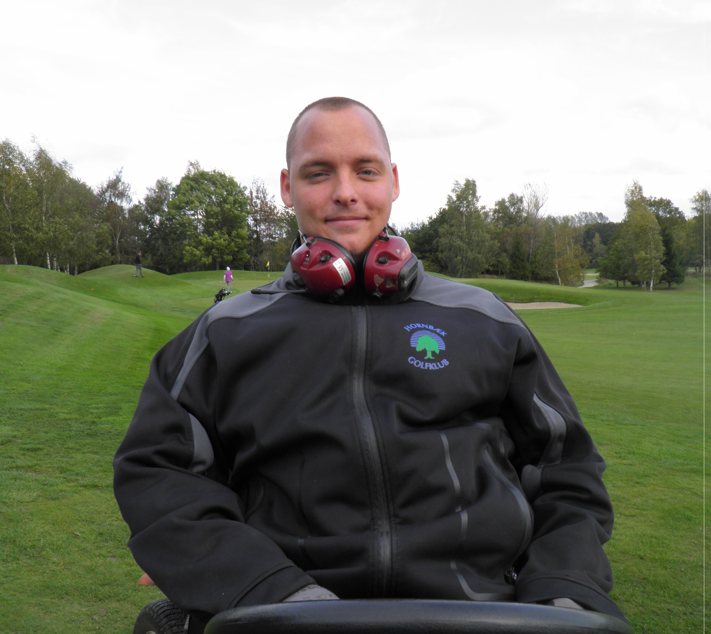

<div class="pages">
  <div data-page="greenkeeper-team" class="page navbar-fixed toolbar-fixed" >
    <div class="navbar">
      <div class="navbar-inner">
        <div class="left">
          <a href="#" class="link back icon-only"><i class="icon icon-back"></i></a>
          <!-- <a href="#" class="back link icon-only"><i class="icon icon-back"></i></a> -->
        </div>
        <div class="center">Greenkeeper Team</div>
        <!-- <div class="right"></div> -->
        <div class="right">
        </div>
      </div>
    </div>
    <div class="page-content" style="padding-top:45px;">
       <div class="content-block">
          <p>Chefgreenkeeper Søren Petersen</p>
          <p>
            
            Født: 06-12-1972<br />
            Uddannelse: Ledelses-uddannet, Udlært greenkeeper, Udlært mekaniker.<br />
            Ansat i HGK: 01-04-2004<br />
            Golf: Medlem i Hornbæk siden 1999<br />
            HCP: 3,3<br />
            CV: Mekaniker år 1989-2004.
          </p>
          <p>Greenkeeper Per Kammer</p>
          <p>
            
            Født: 04-03-1973<br />
            Uddannelse: Udlært elektrikker år 1993, Udlært greenkeeper.<br />
            Ansat i HGK: 01-06-2006<br />
            Golf: Medlem i Hornbæk siden 2000<br />
            HCP: 4,7<br />
            CV: Elektrikker år 1990-2006
          </p>
          <p>Greenkeeper Michael Zinn Bertelsen</p>
          <p>
            
            Født: 11-01-1976<br />
            Uddannelse: Udlært mekaniker år 1997, begynder på greenkeeper uddannelsen år 2009<br />
            Ansat i HGK: 01-04-2007<br />
            Golf: Medlem i Hillerød og hjemmeklub i Hornbæk<br />
            HCP: 3,1<br />
            CV: Mekaniker 1992-1999, Greenkeeper Hillerød Golf 1999-2007
          </p>
          <p>Greenkeeper Torben Jørgensen</p>
          <p>
            
            Født: 14-02-1955<br />
            Uddannelse: Udlært greenkeeper<br />
            Ansat i HGK: 01-10-2007<br />
            Golf: Medlem i Hornbæk<br />
            HCP: 19,8<br />
            CV: Greenkeeper i Nivå golf 1995-2007
          </p>
          <p>Greenkeeper Christian Lind Rasmussen</p>
          <p>
            
            Født: 25-03-1988<br />
            Uddannelse: Udlært greenkeeper<br />
            Ansat i HGK: 01-04-2004<br />
            Golf: Medlem i Hornbæk<br />
            HCP: <br />
            CV: 
          </p>
          <p>Greenkeeper Assistent Casper Søgaard</p>
          <p>
            
            Født: 28-08-1990<br />
            Uddannelse:<br />
            Ansat i HGK: Sæson arbejde igennem flere år<br />
            Golf:<br />
            HCP:<br />
            CV: 
          </p>
          <p>Greenkeeper lærling Oliver Jørgensen</p>
          <p>
            
            Født: 25-03-1994<br />
            Uddannelse: I lære som Greenkeeper<br />
            Ansat i HGK: 01-01-2014<br />
            Golf:<br />
            HCP:<br />
            CV: 
          </p>
          <p><center></center></p>
        </div>
    </div>
    </div>
    </div>
  </div>
</div>
